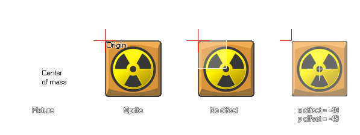

physics_fixture_bind_ext(fixture, target, xoffset, yoffset)
| Argument | La description |
|---|---|
| fixture | l'appareil qui doit être lié |
| target | l'instance cible qui doit recevoir le projecteur (peut être un identifiant d'instance, un identifiant d'objet, un autre ou tous ) |
| xoffset | le décalage le long de l'axe des x |
| yoffset | le décalage le long de l'axe des y |
Retours: Real
Une fois que nous avons défini notre appareil, il doit être lié à une instance. Cela signifie que ses propriétés sont transférées à l'instance sélectionnée, et non au projecteur lui - même, de sorte qu'un appareil peut être lié à plusieurs instances si toutes doivent avoir les mêmes propriétés. Vous pouvez spécifier un index d'objet pour la cible et toutes les instances présentes dans la pièce recevront les propriétés de ces fixtures (mais pas les nouvelles instances de l'objet créées ultérieurement), ou vous pouvez utiliser les mots-clés spéciaux other et all. Vous pouvez même spécifier un objet parent et toutes les instances enfants avec ce parent recevront également le projecteur. Une fois que le projecteur a été lié à toutes les instances dont vous avez besoin, il peut être supprimé s'il n'est plus nécessaire et les instances avec ces propriétés ne seront pas affectées et conserveront ces propriétés.
Normalement, l'appareil sera lié à l'instance avec le centre de masse positionné à l'origine de l'instance, mais ce n'est pas toujours ce dont vous avez besoin et cette fonction vous permet également de décaler la position x et y où le projecteur est lié par une quantité donnée (si vous ne l'exigez pas, utilisez physics_fixture_bind au lieu). Il est important de noter qu'un appareil ne peut supporter qu'un seul décalage, car l'ajout de plusieurs décalages à un seul appareil n'est pas supporté par Box2D.  La fonction renverra également une valeur "id" unique pour la fixture liée ( pas la fixture elle-même ) qui peut ensuite être utilisée pour enlever ("un-bind") les propriétés physiques de l'instance en utilisant la fonction physics_remove_fixture. Cela vous permet d'ajouter et de supprimer des propriétés physiques d'une instance sans détruire et recréer des objets.
Remarque: Les appareils doivent être supprimés lorsqu'ils ne sont plus nécessaires, faute de quoi une fuite de mémoire risque de ralentir et éventuellement de bloquer votre partie.
var fix, inst;
fix = physics_fixture_create();
physics_fixture_set_circle_shape(fix, 16);
physics_fixture_set_density(fix, 1.0);
inst = instance_create_layer(x, y, "Instances",
genericBodyObject);
my_fix = physics_fixture_bind_ext(fix, inst, sprite_width / 2,
-(sprite_height / 2));
physics_fixture_delete(fix);
Le code ci-dessus créera un fixture et assignera son index à la variable "fix". Il définit ensuite la forme et la densité de l'appareil avant de le lier à l'instance à un décalage basé sur la largeur et la hauteur de l'image-objet. L'index de l'appareil lié est stocké dans la variable "my_fix". Enfin, l'appareil lui-même est supprimé pour éviter les fuites de mémoire car il n'est plus nécessaire.